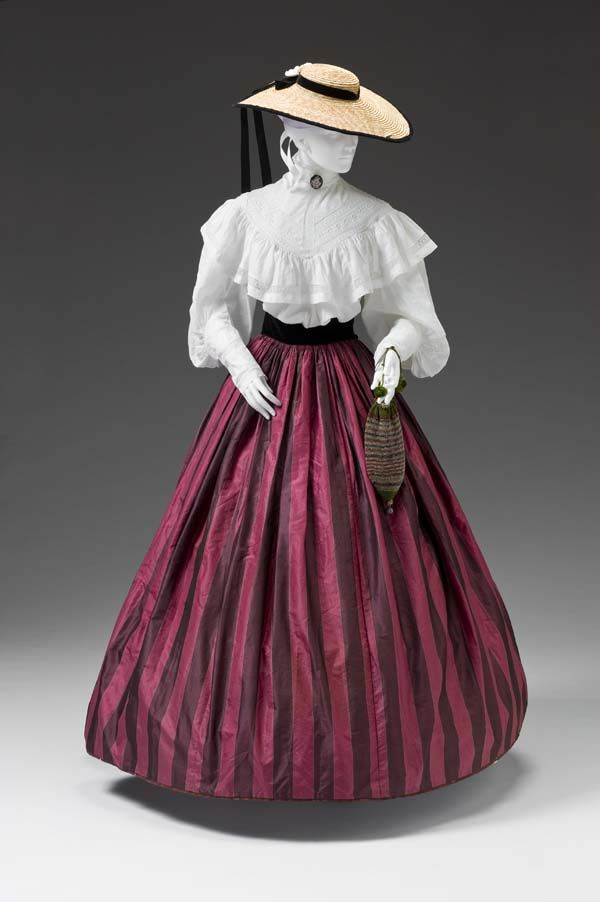
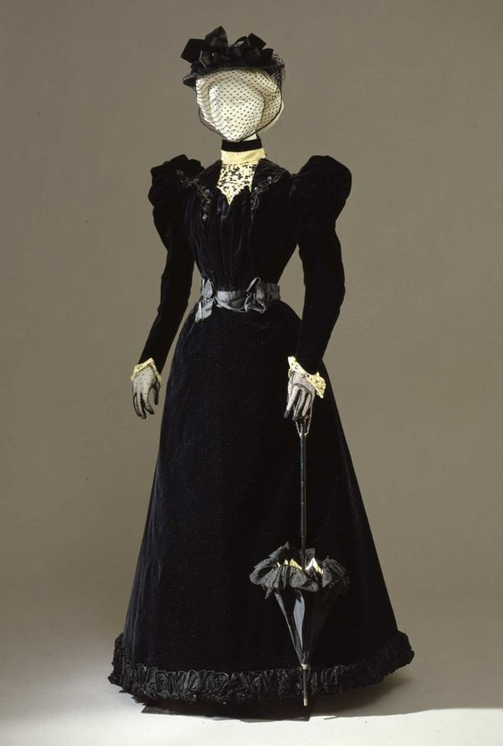

Fashion of the 19th Century
As the 19th century progressed women's dress gradually revealed the actual form of the body. In the 1820s and 1830s the waistline deepened, returning to its natural position. As the natural waist returned the bodice required a tighter fit and in contrast the skirt became fuller and bell-shaped. There were several different sleeve styles but short puffed sleeves were generally worn for evening and long sleeves for day.
During the first two decades of the 19th century,fashions continued to follow the basic high-waisted empire silhouette,but in other respects neoclassical influences became progressively diluted. Dresses remained narrow in front, but fullness at the raised back waist allowed room to walk. Colors other than white came into style, the fad for diaphanous outer fabrics faded.
As the Romantic era arrived, clothing became more complex and increasingly structured. The previous design simplicity was replaced with decorative excess. Horizontal hem treatments added focus to skirts. Wide lapels created shoulder emphasis and the sleeves and shoulders were further emphasized with extended wings. Surface ornamentation, color and print positively abounded. Three-dimensional effects in trimmings were achieved with padding. The waistline dropped much closer to its natural spot and was often accentuated by a wide belt.
In 1840S Shoulders were narrow and sloping, waists became low and pointed, and sleeve detail migrated from the elbow to the wrists. Where pleated fabric panels had wrapped the bust and shoulders in the previous decade, they now formed a triangle from the shoulder to the waist of day dresses.

In 1860S uring the late 1860s, the volume of the skirt had begun to swing backwards, a departure from the circular skirts of the mid-century. This trend became fully realized in the 1870s, with the focus of clothing concentrated at the back, as skirts projected backwards and fell flat against the body in the front. The decade saw two distinct silhouettes in womenswear, both maintaining the focus on the back of the skirt.
The 1880s featured two distinct silhouettes in women’s fashions. he 1890s were a period of change. As the century drew to a close,the world began to move away from the stiff, moralistic, Victorian Era. Urban centers were growing, and new technologies, produced a boom in the ready-to-wear market. Women were enjoying new levels of independence; during the decade the number of women employed outside almost doubled.

☰ Page Editor